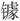

二
中国历史由于独特的文化源头，走在另一条路上。两周期间，中国也实行与欧洲相近的“封建制”，但是，通过“周礼”亦即一套伦理规范，封国与王权、封国与封国之间去军事化，在道德框架内达成秩序的认同与信守。不过，平王东迁（前770年）起，从春秋至战国，先前的道德认同逐渐崩解，此后大约五百多年，王纲解纽、霸道兴起、天下攘乱、武力失控，此即为何孔子会屡屡梦见周公、终生以恢复周礼为己任。
五百年大乱，秦国强者胜出。秦以最强武力敉平、消灭其他较弱的武力，从而建成大一统的中央集权国家。这一国家形态，天然地包含抑制、防止超越国家之上的武力之存在的思想，“堕名城，杀豪俊，收天下之兵聚之咸阳，销锋铸，以为金人十二”[6]。这种认识，带着很强的中国文化和历史特色，世界其他地方，无论欧洲还是东方的蒙古、日本，均无由致之；所以，中国能够出现大一统中央集权的构想与实践，别处则不能。但秦朝虽将这一诉求表达出来，却并未找到用以支持它的架构，毁坏大城城防、收缴销毁天下兵器，都是些硬性和外化措施，仅此肯定不能真正达到目的。代之而起的汉代，开始寻找中央集权与“封建制”政治原理的不同，文、景、武三朝，贾谊、晁错、主父偃先后提出《治安策》《削藩策》《推恩令》，从思想上明确中央集权认识，与“封建制”划清界限。这是中国历史非常重要而且独具的进展，目今一般历史教科书囿于成说，用欧洲历史模式套论中国，将二千年帝制时期称为“封建社会”，而实际上，自秦代起中国就脱离于“封建”体系、进入中央集权模式。
而具体的形而下的制度建设，则还要经过几百年，方形完备。其中要格外注意中国选士制度的形成与变迁。《汉书·董仲舒传》说：
自武帝初立，魏其、武安侯为相而隆儒矣。及仲舒对册，推明孔氏，抑黜百家，立学校之官，州郡举茂材孝廉，皆自仲舒发之。[7]
究竟是“自仲舒发之”抑或稍早些，或许待定，但中国政治土壤中的确长出了一株独特的幼苗，它在几个世纪间从贡举制逐渐演化到科举制，如邓嗣禹先生所论，最终定型于隋唐两代：“科举之制，肇基于隋，碻定于唐。”[8]
把历史对照起来，才比较容易看出名堂：在大致同样的时间段，欧洲形成了军事贵族的骑士集团，中国则生成靠笔墨吃饭的文官集团。他们成为各自的社会中坚。在欧洲，若想做人上人，得靠骁勇、征战和军功；在中国，则“万般皆下品，唯有读书高”，靠的是学识、德行或吟诗赋文的才具。这反映了社会结构的区别，以及权力的去向。随着“士”的阶层的生长与壮大，中国将社会权力移交给远离武力的文官政治，后者“手无缚鸡之力”，无法以武力方式构成威胁——首先当然是对帝权本身的威胁，其次，客观上人民遭受兵燹之灾的几率也大大降低，这意味着社会可以期待较长久的稳定。对此，黄宗羲在《明夷待访录·兵制三》里有一简明概括：“唐宋以来，文武分为两途。”[9]自从这权力模式定型以来，有一种看法就在中国扎下了根，即：“天下”虽于“马上”得之，却不能于“马上”治之。这可以简化为两个字眼，“武功”和“文治”——国家建立或改朝换代主要依靠“武功”，而社稷延存和祚运传续却取决于“文治”。
所以一般地，新朝代建立后，会马上着手改变“打天下”时军事系统的状态，使整个系统重组。宋太祖“杯酒释兵权”，往往被讲述成阴谋故事。其实不然，这一情节来自中央集权政治结构内在而自发的要求，所发生的也远不是一些卓有战功的将军个人权力地位边缘化，而是整个军事系统都被重新构造。这种重新构造，每个朝代原理相同，具体方式方法不一。唐宋两朝，军权收归中央，“然其职官，内而枢密，外而阃帅州军，犹文武参用”[10]，文职重臣外出领军，为全权性质，可直接带兵，亦即文臣临时变身将军，故曰“文武参用”。而在明代统治者看来这很不彻底，它进一步设计出文武“截然不相出入”的兵制：
文臣之督抚，虽与军事而专任节制，与兵士离而不属。是故涖军者不得计饷，计饷者不得涖军；节制者不得操兵，操兵者不得节制。方自以犬牙交制，使其势不可叛。[11]
简言之，明军领导管理有两个并存的层面，一为文官系统的督抚，一为武臣系统的总兵、参将等。前者管控后者而不与部队发生任何直接关系，后者领兵而接受前者的指令。这种设计，目的不言而喻：分散武力的领导权。问题是，怎么做到这一点？我们发现关键在于这句话：“涖军者不得计饷，计饷者不得涖军。”换言之，把权力加以切割，交给一些人财权而不给他们兵权，交给一些人兵权而又不给他们财权。古云：“兵马未动，粮草先行。”明朝正是将“兵马”和“粮草”拆解成互不相干的两块，有“兵马”者无“粮草”，有“粮草”者无“兵马”。如此一来，谁也不能单独控制武力，非于彼此依赖的同时，又彼此牵制不可。在此，明朝统治者很会动脑筋，想出的办法颇为巧妙。当然，决定性因素还是中央集权体制，没有这样一种财赋尽归中央的体制，显然无从以“粮草”来控制军队。
某种意义上，明代确实做到了“使其势不可叛”，近三百年中，不是没有能征善战的将军，却没有真正的军事强人。武力之于国家那历来的两面性，似乎成功地变成了一面——只有顺应国家需要的一面，而无危害、破坏的一面。